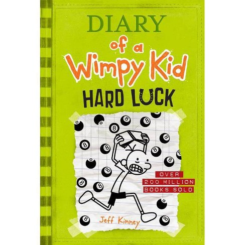

My favorite hobby is playing video games
My name is Arhaan and I am 10 years old. My favorite hobby is playing video games. I like playing roblox because it has millions of games that are fun and you can play with friends.

my favorite book is disry of a wimpy kid hard luck
Diary of a Wimpy Kid: Hard Luck is a children's novel written by Jeff Kinney and the eighth book in the Diary of a Wimpy Kid series. It was released on November 5, 2013. In this book, Greg's best friend Rowley ditches him, and Greg struggles to make new friends.
